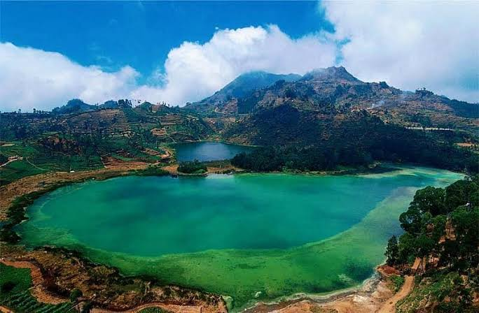

Telaga Warna
Telaga ini memiliki warna air yang bisa terlihat berbeda-beda. Pemandangannya indah dan cocok untuk berfoto.
Destinasi Pilihan
Ke Dieng Yuk, Nikmati Sejuknya Alam dan Indahnya Pemandangan!
Dataran Tinggi Dieng adalah salah satu tempat wisata yang ada di Jawa Tengah. Tempat ini terkenal dengan udaranya yang dingin dan pemandangan alam yang indah. Selain bisa menikmati pemandangan pegunungan, kita juga bisa mengunjungi berbagai tempat menarik dan berfoto bersama teman atau keluarga.
Di Dieng, ada banyak tempat wisata yang bisa dikunjungi, seperti Telaga Warna, Kawah Sikidang, dan Bukit Sikunir. Setiap tempat memiliki pemandangan yang berbeda dan menarik untuk dinikmati. Kalau berkunjung ke Dieng, jangan lupa memakai jaket karena udaranya cukup dingin, terutama pada pagi hari.

Sumber gambar: https://share.google/WzbNX0UMKmB5TcTyS
Telaga ini memiliki warna air yang bisa terlihat berbeda-beda. Pemandangannya indah dan cocok untuk berfoto.
Kawah ini mengeluarkan uap panas dari aktivitas vulkanik. Pengunjung bisa melihat kawah dari area yang sudah disediakan.
Bukit ini terkenal dengan pemandangan matahari terbitnya. Saat cuaca cerah, pengunjung bisa melihat keindahan pegunungan dari atas bukit.